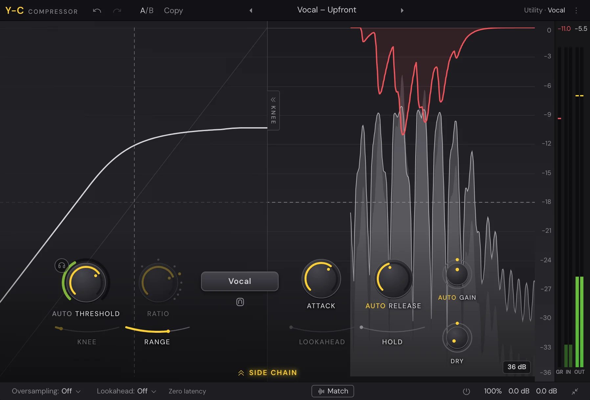

Mix
Y-C
Y-C is a compressor that shows you what it's doing: the level coming in, the level going out and the gain it takes away, scrolling behind its knobs. It has clean modern styles and vintage ones with their own controls, and a side chain you can key from another track, EQ, or lock to the song's beat.

Get started
- Put Y-C in a mixer slot (see Built-in effects). It opens on Default Setting.
- Pick a preset close to what you want: the preset menu is in the middle of the top bar, with arrows either side.
- Play the song and bring Threshold down until the red line in the display shows the compression you want.
- Set Ratio, then Attack and Release to taste. Leave Gain on AUTO to keep the level even, or click Match in the bottom bar to set it by ear for you.
The main controls
The knobs sit over the level display.
- Threshold (the big knob): where compression starts. While the song plays, a ring round it shows the level of what it hears. AUTO sets the threshold for you.
- Audition triggering (the headphones by Threshold): plays only what the compression takes away. Click again to stop.
- Ratio: how hard it compresses above the threshold. Its dots jump to common ratios.
- Style: the compressor's character (see Styles).
- Character (the small icon by Style): adds colour. Pick Off, Tube, Diode or Bright, set how much Drive, and whether it comes before or after the compressor. The icon turns red while a mode is on, and scrolling over it steps through the modes.
- Attack: how fast it reacts to a rise in level.
- Release: how fast it lets go. AUTO lets it choose its own release.
- Gain: makes up the level compression takes away. AUTO does it for you. The ring round it pans the wet sound between mid and side.
- Dry: mixes in the uncompressed sound, from off upwards, for parallel compression. The ring round it pans the dry sound left and right.
- Knee, Range, Lookahead and Hold (the arcs round the knobs): how softly compression begins, the most it can take away, how far ahead it looks for peaks, and how long it holds before letting go.
Knobs turn by dragging up and down (⇧ for fine) or scrolling. Double-click one to type a value: times in ms or seconds (30, 2s), a ratio (4, ∞), off for Dry. ⌘-click or ⌥-click resets a knob. Rest the pointer on one to see its name and value. Right-click for Reset, Type in value… and its automation.
Some knobs come in pairs. ⌥-drag one and its partner moves the other way: Gain with Dry, Input with Output, Threshold with Drive.
Styles
Click Style for the menu. The styles are in four groups; the menu says a line about each.
| Group | Styles |
|---|---|
| Modern | Clean, Versatile, Smooth, Punch, Upward, TTM |
| Classic | Op-El, Vari-Mu, Classic, Opto |
| Utility | Vocal, Vox, Mastering, Bus, Pumping |
| Vintage | FET 76, Opto 2A, Opto Tube, Distress, VCA 160, Diode 609 |
The top bar shows the group and style you're on, for example Modern · Clean.
- Upward turns up what's quiet (detail, tails, breaths) rather than turning down what's loud.
- TTM works on three bands, up and down at once.
- Vocal sets its own knee and ratio: you only set the threshold. Knee is off in Vocal and in the Vintage styles.
- Vox is one control: Compression, with a Gate and a Ceiling. With AUTO on, ratio, knee and times follow Compression.
Vintage styles
The Vintage styles swap the knobs for their own panel, as hardware has.
- Input drives the compressor harder, in place of Threshold. On Opto 2A it's Peak Reduction.
- Ratio buttons pick the ratio. FET 76 has All (all buttons in: the crush). Distress has Nuke.
- Opto 2A has Emphasis in place of a ratio, and a LIMIT / COMPRESS switch.
- Opto Tube has a TIME switch: fixed, manual, or both.
- Distress has DET (what the detector hears), AUDIO (its distortion modes) and BRIT (all buttons, on any ratio).
- VCA 160 has OVER EASY (a soft knee) and AUTO (its own times).
- Diode 609 has attack buttons and Recovery buttons (set times, or a1 and a2, which recover faster after peaks than after long passages), plus a LIMIT stage with its own threshold.
- LINK (Output Link): the output follows the input, so you can drive harder without it getting louder.
The displays and meters
The level display scrolls from right to left: the level coming in, the level going out, and the gain reduction as a red line from the top. Click the scale button to change the scale of the displays and meters. The KNEE tab at the side opens the knee display, which draws the compression curve with the level moving along it.
The meters at the right show the input, the output and the gain reduction. The numbers over them hold the most reduction and the highest output peak; click one to reset it.
Compact, in the bottom bar, hides the displays and lays the meters flat, for a smaller window.
The side chain
Click the side chain toggle under the display to open its section. It's what the compressor listens to, not what it changes.
- Audition (headphones): hold it to hear what the detector hears.
- Level: turns the side chain up or down.
- Trigger: Internal (its own sound), External (another track's) or Host Sync (a pulse on the song's beat).
- Stereo Link: from 0% (each side compresses alone) to 100% (both move together). The button under it picks the link mode: MID, SIDE, M>S (triggered by the mid, compresses the side) or S>M.
With External, choose a track in Key from. Until you do, it hears silence and says so. This is the same key as the slot's Sidechain input in the Mixer; see Sidechain. A kick's track ducking a bass is the classic use.
With Host Sync, pick the note value (1/4 Note and so on), then set Offset (where in the beat it hits) and Length.
Side chain EQ
The side chain has a small EQ of its own, drawn as Y-EQ draws its bands. Use it so the compressor reacts less to the low end, or only to the harsh part of a vocal.
- Double-click the background for a band: a Low Cut at the far left, a High Cut at the right, a Notch near the bottom, else a Bell.
- Drag a dot for its frequency and gain (on a cut or notch, up and down sets its Q).
- Scroll over a dot for its Q, or a cut's slope.
- ⌥-click a dot to bypass it.
- Right-click a dot for its shape, slope, placement (stereo, mid or side) and Delete.
The bottom bar
- Oversampling: Off, 2x, 4x, 8x or 16x. Less aliasing on fast settings, more CPU.
- Lookahead: the most the Lookahead arc can reach, from Off up to 20 ms. It sets the latency.
- The latency readout. With Oversampling and Lookahead both Off it reads Zero latency, so you can record a vocal through Y-C.
- Match: play the song and click it. Y-C listens to what comes in and goes out, then sets Gain so they're as loud. It reads Matching… while it listens.
- Bypass: turns Y-C off, keeping its latency.
- Output (the button with the mix and levels): Input and Output with their pans, and Mix, the wet and dry blend.
- Compact: see The displays and meters.
The top bar has Undo, Redo, A/B with Copy, the presets, and the ⋮ menu: Reset to the default setting, Copy state and Paste state (to copy one Y-C's settings into another).
Presets
The presets are in folders: Vocals, Drums, Bass, Mix and Special. Each has a line on what it's for. They go from a rough vocal level to a drum bus smash, a master bus glue, an upward detail lift and Sidechain – Duck to Kick, which keys from another track: choose the kick's track in Key from. Once you change a setting, the preset's name reads Custom.
Automation
Threshold, Ratio, Knee, Range, Attack, Release, Hold, Wet Gain, Dry Gain, Mix, Side Chain Level, Drive, Input, Output and Emphasis can all be automated. Right-click the control, or touch it and click Automate "…" in the title bar. See Automation.
Something here wrong or missing? Tell us.